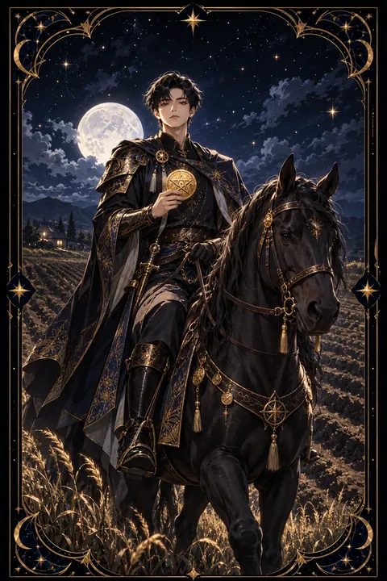

펜타클 기사 카드 — 느려도 멈추지 않는 걸음
펜타클 기사 카드 한눈에 보기
펜타클 기사 카드 상징 읽기

동네보살의 카드 그림은 전통 라이더–웨이트 덱의 뜻을 새 그림으로 옮긴 것입니다. 아래 상징 설명은 전통 덱의 그림을 기준으로 합니다.
펜타클 기사에는 움직이지 않는 검은 말에 올라탄 기사가 손바닥 위 동전에 시선을 고정한 채 멈춰 서 있습니다. 다른 기사 카드들이 힘차게 달리는 것과 달리 멈춰 선 모습은 신중함과 인내를 상징합니다.
네 발을 땅에 단단히 디딘 검은 말은 흔들림 없는 끈기와 현실에 뿌리내린 태도를 드러냅니다. 투구 꼭대기와 말 머리에 꽂힌 푸른 잎은 자라나는 생명력과 풍요를 향한 준비를 뜻합니다.
등 뒤로 이어지는 고랑 진 밭은 성실한 노동의 결과이자 앞으로 심을 씨앗을 기다리는 땅입니다. 한 고랑씩 갈아야 밭 전체가 준비되듯 꾸준한 반복이 큰일을 이룬다는 가르침입니다.
기사가 동전에서 눈을 떼지 않는 모습은 목표를 잃지 않는 집중력을 보여 줍니다. 서두르지 않고 맡은 일을 끝까지 책임지는 사람이 결국 가장 멀리 간다는 것이 이 카드의 메시지입니다.
펜타클 기사 카드 정방향 뜻
정방향 펜타클 기사는 꾸준함과 책임감으로 목표를 향해 한 걸음씩 가는 시기를 뜻합니다. 빠른 성과보다 느리지만 확실한 진전이 쌓이는 흐름입니다.
이 카드는 성실한 노력이 배신하지 않는다는 점을 강조합니다. 매일 정해 둔 일을 빠짐없이 해내고 약속한 기한을 지키는 태도가 주변의 신뢰를 얻습니다. 위험을 무릅쓰는 모험보다 검증된 방법을 차근차근 따르는 편이 좋은 결과를 냅니다.
지금은 조급함을 내려놓고 긴 호흡으로 계획을 세울 때입니다. 목표를 작은 단계로 나누고 하루하루 체크하며 이어 가 보세요. 남들보다 느리게 느껴지더라도 멈추지 않는 것이 가장 중요합니다. 끈기 있게 밭을 가는 기사처럼 오늘 할 몫을 해내면 수확의 계절은 틀림없이 찾아옵니다. 느린 발걸음이라도 방향만 맞으면 충분합니다.
펜타클 기사 카드 역방향 뜻
역방향 펜타클 기사는 꾸준함이 지나쳐 정체로 바뀐 상태를 보여 줍니다. 익숙한 방식만 고집하다 제자리걸음을 하거나 같은 일의 반복에 지쳐 의욕을 잃은 모습일 수 있습니다.
지나친 신중함 때문에 결정을 미루다 좋은 기회를 놓치는 경우도 있습니다. 반대로 일에만 몰두한 나머지 휴식과 인간관계를 소홀히 하는 일중독의 신호일 때도 있습니다.
이 카드는 성실함을 내려놓으라는 말이 아닙니다. 다만 방향을 점검하고 작은 변화를 받아들일 때라는 신호입니다. 일하는 순서를 바꾸거나 새로운 방법을 하나 시도해 보세요. 미뤄 둔 결정이 있다면 기한을 정해 내리는 것이 좋습니다. 쉬는 날을 확실히 정해 두면 다시 움직일 힘이 생깁니다. 쉼과 변화를 허락할 때 꾸준함은 다시 힘이 됩니다. 오늘 하나만 달리 해 보세요.
연애에서 펜타클 기사 카드
솔로라면 천천히 신뢰를 쌓아 가는 인연이 찾아오는 시기입니다. 한눈에 불꽃이 튀는 만남보다 만날수록 편안하고 믿음이 가는 사람에게 마음이 기울기 쉽습니다. 조급하게 결론을 내리려 하지 말고 꾸준히 연락하며 서로를 알아 가 보세요.
연애 중이라면 안정적이고 성실한 관계가 이어집니다. 화려한 표현은 적어도 약속을 지키고 곁을 지키는 모습에서 깊은 신뢰가 자랍니다. 다만 관계가 너무 익숙해져 설렘이 줄어들 수 있으니 가끔은 새로운 장소에서 데이트를 하거나 평소와 다른 이벤트로 활기를 더해 보세요. 한결같은 마음이 이 카드가 말하는 사랑의 힘입니다. 오래 함께할 미래를 차분히 그려 보는 대화도 잘 풀립니다. 연락이 뜸하더라도 마음이 식은 것이 아니니 서운함은 말로 풀어 보세요.
재회·속마음 질문에서 펜타클 기사 카드
재회 질문에서 펜타클 기사가 나오면 빠른 결과보다 시간을 들인 꾸준한 노력이 필요하다는 뜻입니다. 상대는 신중하게 상황을 지켜보고 있을 가능성이 큽니다. 한 번에 마음을 돌리려 하기보다 달라진 모습을 오랜 시간 일관되게 보여 주는 것이 효과적입니다. 연락을 하더라도 부담스럽지 않은 간격을 지키며 천천히 신뢰를 쌓아 가세요. 조급해서 서두르면 오히려 상대가 한 발 물러설 수 있으니 기다림도 노력의 일부로 여기는 것이 좋습니다. 상대의 속도를 존중하는 것이 이 카드가 권하는 재회의 방식입니다. 약속한 것은 작은 일이라도 지키세요. 기다리는 동안 자신의 생활을 차분히 다져 두면 다시 만났을 때 한층 믿음직한 모습으로 설 수 있습니다.
일·금전에서 펜타클 기사 카드
일과 직장에서는 성실함과 책임감이 가장 큰 무기가 되는 시기입니다. 맡은 업무를 기한 안에 꼼꼼하게 끝내는 모습이 꾸준히 쌓여 신뢰받는 사람이 됩니다. 장기 프로젝트나 반복 업무처럼 인내가 필요한 일에서 특히 실력을 발휘합니다. 눈에 띄지 않는 일을 묵묵히 해내는 모습을 주변은 생각보다 잘 지켜보고 있습니다.
금전 면에서는 꾸준히 모으는 살림이 힘을 발휘합니다. 매달 같은 날 일정 금액을 저축하고 예산에 맞춰 쓰는 습관을 지키면 느리더라도 확실하게 여유가 생깁니다. 급하게 큰돈을 벌려는 욕심보다 알뜰하게 지키는 태도가 지금의 흐름과 잘 맞습니다. 매달 한 번 가계부를 돌아보는 날을 정해 두면 흐름을 놓치지 않습니다.
펜타클 기사 카드는 예일까 아니오일까
시간이 걸리더라도 멈추지 않고 해 나가면 원하는 결과에 닿는다는 카드이므로 답은 예입니다. 빠른 결말을 바란다면 조금 더 기다려야 합니다. 역방향은 정체된 방식을 바꾸라는 뜻이어서 조건부로 해석합니다.
자주 묻는 질문
펜타클 기사 카드 역방향은 나쁜 뜻인가요?
역방향 펜타클 기사는 꾸준함이 지나쳐 정체로 바뀐 상태를 보여 줍니다. 익숙한 방식만 고집하다 제자리걸음을 하거나 같은 일의 반복에 지쳐 의욕을 잃은 모습일 수 있습니다.
펜타클 기사 카드가 연애 질문에 나오면요?
솔로라면 천천히 신뢰를 쌓아 가는 인연이 찾아오는 시기입니다. 한눈에 불꽃이 튀는 만남보다 만날수록 편안하고 믿음이 가는 사람에게 마음이 기울기 쉽습니다. 조급하게 결론을 내리려 하지 말고 꾸준히 연락하며 서로를 알아 가 보세요.
타로 카드는 어떻게 뽑나요?
타로 카드 페이지에서 78장을 섞으면 그중 22장이 펼쳐집니다. 마음이 가는 세 장을 고르면 과거·현재·미래 자리에 놓이고, 한 장씩 뒤집어 자리와 방향에 맞는 풀이를 읽습니다. 정방향과 역방향은 섞는 순간 정해집니다.